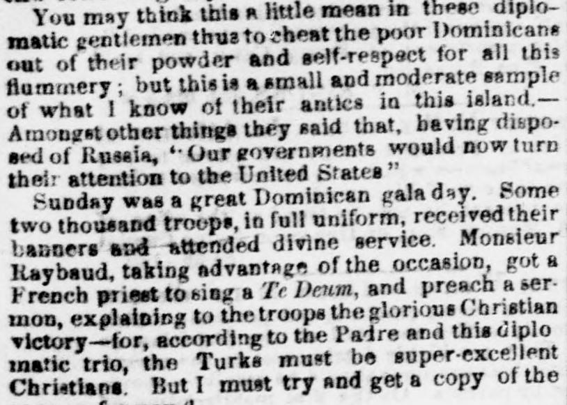
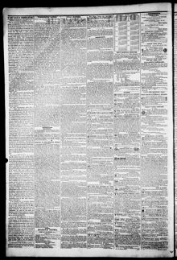

Two thousand troop., in full uniform, received their banners and attendedDos mil soldados, en uniforme completo, recibieron sus banderas y asistieron
The Daily Dispatch. Richmond [Va.], January 2, 1855. Page 2. View the originalVer el original


See the full pageVer la página completaAccording to the newspaper excerpt, a correspondent reported that the French consul forced the Dominican government to destroy the liberty of the press and prevented a treaty with the United States. The correspondent noted that the French consul induced the President to stop publication after an account of a French democratic celebration was copied from the New York Herald, and later intervened when the correspondent attempted to publish the treaty with the United States in a new paper called L'Avenir.Conforme al extracto de prensa, un informante relató que el cónsul francés forzó al gobierno dominicano a extinguir la libertad de imprenta y malogró el tratado proyectado con Estados Unidos. Señalaba que el representante galo indujo al mandatario a suspender una publicación tras insertarse la crónica de una fiesta cívica francesa tomada de The New York Herald, entrometiéndose de nuevo cuando el comunicante intentó divulgar el tratado con Estados Unidos en una nueva hoja titulada L'Avenir.
FULL TEXT:TEXTO COMPLETO:
You may think this a little mean in these diplomatic gentlemen thus to cheat the poor Dominicans out of their powder and self-respect for all this flummery; but this is a small and moderate sample of what I know of their antics in this island.—Amongst other things they said that, having disposed of Russia, “Our governments would now turn their attention to the United States”Pueden pensar que esto es un poco mezquino en estos caballeros diplomáticos engañar así a los pobres dominicanos de su pólvora y autoestima por toda esta farsa; pero esta es una muestra pequeña y moderada de lo que sé de sus travesuras en esta isla. —Entre otras cosas dijeron que, habiendo dispuesto de Rusia, «Nuestros gobiernos ahora volverían su atención a los Estados Unidos»
Sunday was a great Dominican gala day. Some two thousand troops, in full uniform, received their banners and attended divine service. Monsieur Raybaud, taking advantage of the occasion, got a French priest to sing a Te Deum, and preach a sermon, explaining to the troops the glorious Christian victory—for, according to the Padre and this diplomatic trio, the Turks must be super-excellent Christians. But I must try and get a copy of theEl domingo fue un gran día de gala dominicano. Unas dos mil tropas, en uniforme completo, recibieron sus banderas y asistieron al servicio divino. Monsieur Raybaud, aprovechando la ocasión, consiguió que un sacerdote francés cantara un Te Deum, y predicara un sermón, explicando a las tropas la gloriosa victoria cristiana —pues, según el Padre y este trío diplomático, los turcos deben ser cristianos superexcelentes. Pero debo intentar conseguir una copia del